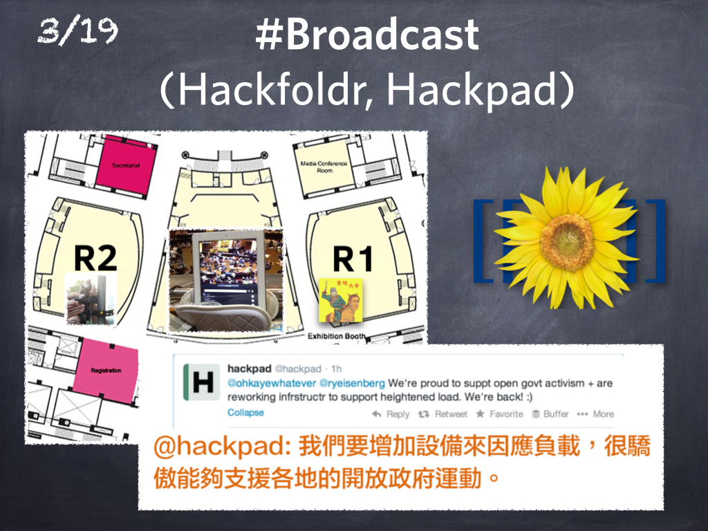
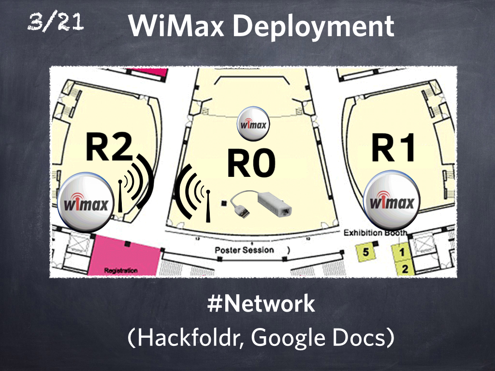
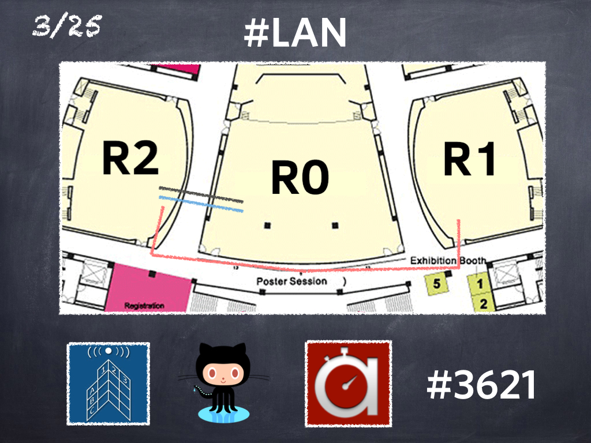
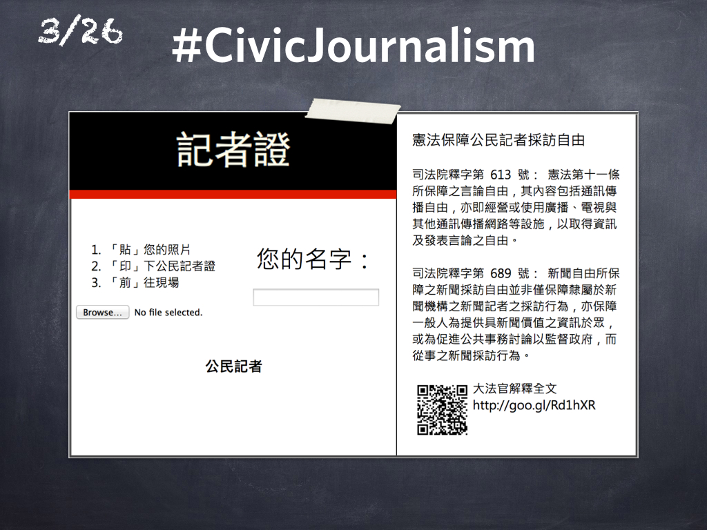
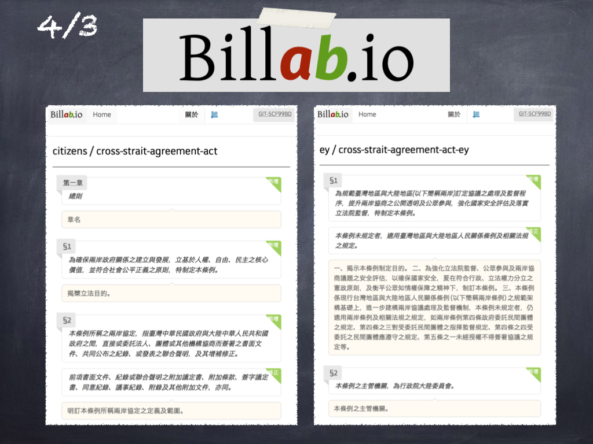
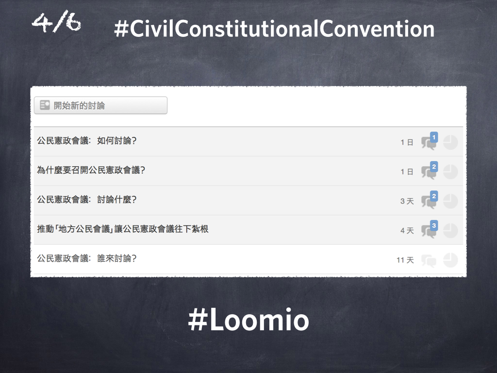

…and that was the first year [of g0v].
In March, we were enlisted to support the “anti new nuclear plant” parade that took place on March 8, 2014.

A year ago there was a larger parade for the same cause at the same location. Although the organizers obtained a HiNet broadband line, they did not get adequate tech support; the line was overloaded, and nobody could use the internet. The media was unable to publish reports on time; reporters and publishers were displeased.
This time, the organizers sought help from g0v. We brought our own home APs and reconfigured them to ensure connectivity. We also brought some 20 USB Ethernet dongles to avoid issues with wireless saturation. After all of this preparation, fewer than a dozen members of the press came due to inclement weather. What were we to do with the extra 50Mbit or more of extra bandwidth?
We thought about providing broadband access to the 10,000 particpants, but our consumer-grade APs were not truly capable; our equipment would just become overloaded. Instead, we used that bandwidth to provide high-resolution, instant video broadcasting of the stage and the audio directly to YouTube Live.
Even though it wasn’t pre-announced, a lot of people participated, even more than the number of people who stood directly near the stage. This demonstrated that we could provide telepresence for those in-the-field movements.
Since this event, we have been discussing ways to improve our use of technology for future events as we had originally intended to demonstrate in OSDC. That did not happen, and we will explain why shortly…
Take a look at this Venn diagram. On March 18, there was another parade near the Legislative Yuan. The administration thinks that any foreign trade pact with other nations is a diplomatic matter. This does not apply to China, because constitutionally China is part of Taiwan (and constitutionally China thinks Taiwan is part of China as well. I think we agree… not.)
Because constitutionally there are a lot of fuzzy things going on in the cross-strait relationship, there is no legal way for the legislative branch to oversee trade pacts of any kind with China. On that evening there was a forced passing of a trade pact, that had a lot of people concerned. Because if the legislative branch could just pass on their overseeing, then the administration could sign anything with China using the same process.
That night, there was a huge protest. I decided to help broadcast the event. When I arrived with my WiMax device and video capture card, I found someone far more professional already there. He had a desktop computer with a video capturing card and broadcast software, and he called himself IndieTaiwan.
But he did not know how to set up YouTube Hangout or how to connect the desktop computer to a wireless network. He connected all of the camera and audio lines, but the signals doesn’t get out. And his phone’s 3G connection was terrible as well.
So I provided my phone, which has a reasonably fast HSDPA+ connection, but we could not get USB Wifi going with Indie’s desktop machine. We had internet, and we had broadcasting, but we could not connect these two together.
Then a young student randomly showed up, saying “Hey, here’s my laptop, and this is the Administrator account,” (it’s running Windows XP, I think.) “… and I am not going to use my laptop tonight.”
At that time, I had no idea why he’s not planning to use the laptop that night.
“I trust my laptop to you. Do whatever you want with it. Sorry that my desktop is a mess,” said the student [of the Black Island Nation Youth Front].
With that laptop, I connected the wireless from my phone. Using XP’s internet sharing, I routed the connectivity via Ethernet to Indie’s desktop computer, and we were broadcasting real-time video of the night’s protest in no time.

I remember well that point in time, when all three parties (Civic Media, Free Software, and Social Activism) moved a little bit closer into the middle, and something really interesting happened.
What I’m going to say is not about the Legislative Yuan, but the Academia Sinica, in order to protect people involved in this camp.

The 0th Sunflower Digital Camp was held on March 19 at the Academia Sinica, organized by KC Huang on the 7th floor among other people. The venue was the joint library of humanities and social sciences, the same place we currently are.

There are three rooms—R0, R1 and R2. IndieTaiwan was in R1, broadcasting the concert outside. And in R0, at about the 5th row from the rear, there was someone using his sandals to prop up his iPad and streaming what was happening inside.
Several friends in the g0v set up a few webcams and collected all the video feeds on Hackfoldr, and people co-wrote the event on Hackpad.

For some reason, people were really interested in this camp, so Hackpad was … [laughs and claps] … paying for more servers to support us. The translation task force was established then.
At that time the camp was not called the Sunflower. This was likely because on the morning of March 19, people in R1 set up the MediaWiki for R0, and as we know the default logo of MediaWiki is a Sunflower. So the camp has been called the Sunflower Camp since then. [Laughs]
Our major task on March 20 was organizing a logistics and supplies task force. Many people in R0 needed lunchboxes, some vegetarian and some not. So we used a Google Form and a pinned-article on PTT [a local BBS]. People simply filled in the Google Form with what they wanted to eat and lunch boxes were automatically sent. Such miracle!

And on March 20, friends from g0v went in R2. Although R2 is quite close to R0, we still put up a directional antenna and tried to bring the WiMax -> Wifi signals into R0, where the iPad had been.
On March 21, we found that 3G bandwidth and 2.4GHz were full, mainly because the Cisco APs were too strong in the Academia Sinica; therefore … [laughs] we brought 20-some USB ethernet jacks for the R0 camp.
Before the wired network was set up in the whole camp, WiMAX portable hotspots were widely used [since the WiMAX had few users compared to the 3G]. We opened a Hackfoldr named “Network” and updated network topology using Google Docs.
On March 22, there were rumors spread from R2 that someone was hurt in R0, for people were slapped on the shoulder, so crowds from R2 scrambled, trying to enter R0 to see what had happened [laughs]… But it was very hard to enter the International Conference Hall, until a guy with a coat showed up and told R2 that people in R0 were fine.
[the Prime Minister’s explanation of “people brutally expelled by riot police” was "people slightly slapped on shoulder and the riot police softly reminded the crowd to leave"; The guy with a coat is believed to be Lin Fei-fan.]

After this incident, we had a discussion and believed it would be better to set up a field screen to project the images from R0, so that people outside R0 could know what was going on. Henceforth, projectors were outside R0, playing the text and video broadcast from R0.
In addition to the translation task force on Hackpad, we found someone in R0 who can type more than 120 Chinese words/min, to maintain the text broadcast using a new IRC channel. Since then, in addition to the transcribing task force who listened to the broadcast online, there’s a new textual broadcast team in. The text was concurrently shown on the projected screen alongside live video feed.

On March 23, at the MoeDict Hackthon, we repurposed the domain name we registered a while ago, g0v.today, to collect all the direct streams for everyone, including the English translation task force.
On the same day, the justices of the Constitutional Court released the interpretation that walking around the Academia Sinica is now legal. [Laughs] So we applied for a broadband ADSL line at once.
[There is a law in Taiwan requiring any kind of protest to be approved and permitted by the authorities in advance. The mass gathering at “Academia Sinica” did not have permission, but neither was it an organized, pre-meditated event. The court ruled that these kinds of flash mob protests were legal as long as they were spontaneous.]

On March 24, unfortunately, Academia Sinica was out of electricity. It was the darkest day during the camp. Not only were friends in the camp attacked, but also EtherCalc and g0v.hackpad.com. The services were restored in about one hour, though.
So we requested the ADSL line since the WiMax wasn’t reliable. Much to our surprise, the Hinet ADSL was ready right on the next day. It normally would have taken several more days. Perhaps people in Hinet longed for direct streaming, too. [Laughs] So we ran a few cables, including two 350m CAT–6 LAN cables that connected R0 and R2. Why do we need cables so long to connect two rooms that are so close? [Laughter]

[In the real venue of OSDC, the R0 is just 15m away from R2. But in the protest area, the linear distance between road and the building is about 100m.]
Thus, [Claps and Laughs], R0, R1 and R2 were on one LAN.
For some other reason, 3,621 Villagers from PTT crowd-funded and bought front-page advertisements in major newspapers promoting the g0v.today website, so the capacity of the server became a serious issue.
[PTT is a popular bulletin board system in Taiwan with about 1.5M users and a telnet(!) interface. PTT users are called 鄉民 (villager).]
The site switched from EtherCalc to GitHub Pages overnight and the extremely heavy traffic was carried on Fastly, the CDN that delivers GitHub Pages.
[At that time g0v.today served about half a million unique visitors.]
On March 26, we realized that we should better protect the people recording around Academia Sinica with their iPads. So, press badges were made for friends in g0v and citizen journalists, with the text of Constitutional Court interpretation printed on them, explaining that any citizen can be an independent journalist, without being a part of “the media.” Since then, we have become the media.

On March 27, we set up another website, 123.g0v.today, where you can find the phone number of the legislator for your election area. You might call and demand for the legislation [for a cross-strait agreement-monitoring mechanism be completed] before review of the pact proceeds, and invite the legislator to join the camp.
On the same day, the undersea Internet cable had some technical issues and we considered switching from YouTube to justin.tv, who really wanted to help. But the cable was restored on the next day, so I’ve not yet replied to their kind email…

On March 28, a team from ITRI showed up, saying “there are still blind spots, like in some corridors in the Academia Sinica”, and helped set up six more cameras and capture videos from the blind spots. NO incident NOR brutal events ever happened after the cameras were up. We appreciated what they’ve done and hence shared much bandwidth.
We found some people who made a two-story-tall screen [about 5m tall] in R2, and later in R1, so people saw what was happening in R0 at a 1:1 scale. Then, the projector in R0 was reported to play a film, Kano [laughs]. It was for direct streaming, anyhow.

On March 29, another group, with all people dressing in white clothes for unknown reason [audience laughs (it was the “white justice”, an anti-protest protest)], wanted to hold another camp and asked us for help broadcasting.
Since g0v is neutral, we also helped them to set up the broadcast and provided support. They actually came to the logistics task force afterwards, saying “it’s our first activity and we had such and such problems, can you help us?” So we documented in a blank template our experience from the last hackathon (on March 8) and taught them how to start broadcasting. I heard people saying their subsequent activities were somewhat improved…

On March 30, there came another much larger event [a larger protest with roughly 500,000 people attending]. Compared to the 250k-event on Ketagalan last year [a protest for a “murdered” soldier with 250,000 people], this time we had a large screen every 400m broadcasting the event, almost equal to a large concert.

On March 31, the day after the large protest, the camp in R0 continued, but there were fewer people in R1 and R2. We thought it over and decided to provide Internet access to bystanders near the camp, naming it “bystander-thon.” It’s very complicated, so, we applied pfSense (with much help from NTU CSIE) to limit per-person bandwidth. We hoped providing usable Internet access would get more people to camp there.

On April 1, an interesting website tisa.g0v.tw went live after eight months of development. It is a very simple website to find out whether a company is impacted by the Cross-Strait Service Trade Agreement draft.

On April 2, the bystander-thon was up in R1, and the Graduate Institute of Journalism from the National Taiwan University held a camp near us by coincidence. [The “NTU E Forum" was a group of journalism students publishing field reports on Facebook.] We then integrated their news along with our broadcasting on a web page, which automatically displayed for everyone who connected to the g0v-public network.
On April 3, someone (guess it’s Bergmeister “clkao”) set up another site called billab.io, while the “Congress Matters” (http://ly.g0v.tw/) website displayed the differences between current articles and drafts. Now newly proposed, un-committed articles [about the audit for cross-strait negotiation] can be compared on the new site. Quite a few people had written “quick facts” about the drafts using data from the site.

On April 4, the bystander-thon was also up in R2, on the same LAN. A Loomio group (an online democracy platform) was set to help people involved in the networking task force to decide what to do by themselves.

On April 5, a sign language club joined the camp [laughs] … They called themselves the “civil constitutional convention.” There are signs meaning “I agree,” “Not sure,” "Talk faster,” etc. We captured the whole record with direct broadcasting and transcriptions.
On April 6, another Loomio group was set up for this sign language club activity. The Loomio team also helped, adding new features for the online democratic platform.

On April 7, then, we checked the time and suddenly found that OSDC was scheduled at the same venue on April 11. The venue should be returned to them. [Laughs and claps]. We can’t ask OSDC to take place elsewhere. We can’t have that precedent. Therefore, people took time, cleaned the meeting rooms, and retreated.
[In fact, after concessions from Wang Jing-Pyng, and a general congress meeting on April 11, occupiers finally decided to leave on April 10.]

Since then, the broadcaster IndieTaiwan has become jobless. He went to the crowd at the front door and joined the long-staying elder people selling roasted intestines [laughs]. It’s because it is not allowed to eat in the conference hall, that he went outside to sell roasted intestines, and I heard it’s quite a good business [laughs]. This is all about the camp.
[The Chinese characters for “Sunflower” and “Intestine Flower” are quite similar in shape. That’s why they called the additional session of the camp “intestine flower.” In fact, the session was full of complaints (sometimes compliments) and swears, highly appreciated by young people. The event lasted for two nights, direct-streamed. Some said it was part of the process of collective psychotherapy.]

Among the camp, for me, or for friends who joined us (i.e., g0v), one of the most important things was “Network Neutrality”.
When I was supporting broadcasting the concert on the night of March 18, I wasn’t aware that some people were going to climb the wall between R1 and R0. But only a neutral Internet can connect people inside and outside of the wall. Communication diminishes conflicts and misunderstanding. That was my original motivation.
If it is even 1% due to what we did that few people were injured, and no one went missing, then I think it is worth it.
[A very long round of applause.]
In the last minute of my talk, I would like to deliver my appreciation to the networking task force, transcribing and translation task force, media task force, logistics task force, and all the friends, for they insisted on transparency until the last minute.
…I guess only geeks would perceive [this slide] as transparent… [Laughter]

So we didn’t give up on the idea of openness and transparency. We summarized and shared our experiences of this campout, even though some names and places were obfuscated to protect those involved. Friends who want to hold another big campout around Academia Sinca… [laughs] … are welcome to refer to our documents.
I’d like to quote @nchild, who’s been promoting network neutrality:
“If we believe in the power of openness and transparency, we shall wield it to conquer darkness.”

Thank you!
[Applause]